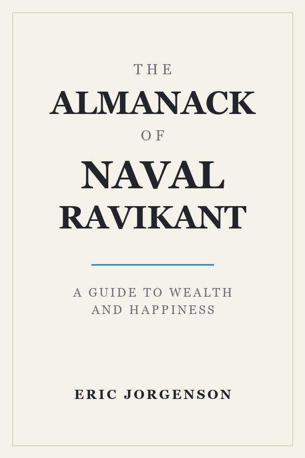

The Almanack of Naval Ravikant

Metadata
- Author: Naval Ravikant, Tim Ferriss, Eric Jorgenson
- Full Title: The Almanack of Naval Ravikant
- Tags: books favorite technology
Part I: Wealth
“Making money is not a thing you do—it’s a skill you learn.”
- Seek wealth, not money or status. Wealth is having assets that earn while you sleep. Money is how we transfer time and wealth. Status is your place in the social hierarchy.
- Ignore people playing status games. They gain status by attacking people playing wealth creation games.
Understand How Wealth Is Created
Getting rich is about knowing what to do, who to do it with, and when to do it. The tweetstorm tries to be information-dense, very concise, high-impact, and timeless. It has all the information and principles, so if you absorb these and you work hard over ten years, you’ll get what you want.1
Play long-term games with long-term people. Pick an industry where you can play long-term games with long-term people. All the returns in life, whether in wealth, relationships, or knowledge, come from compound interest.
Specific Knowledge
Specific knowledge is found by pursuing your genuine curiosity and passion rather than whatever is hot right now. It is often highly technical or creative, and it cannot be outsourced or automated.
Judgment
Leverage is a force multiplier for your judgment. Code and media are permissionless leverage — they work while you sleep.
Accountability
Embrace accountability and take business risks under your own name. Society will reward you with responsibility, equity, and leverage.
A Small TypeScript Example
type Leverage = "code" | "media";
const build = (kind: Leverage) => { // Permissionless leverage, compounded daily. return kind === "code" ? 24 : 24;};
Reading Notes
| Idea | Leverage | Compounds? |
|---|---|---|
| Specific knowledge | High | Yes |
| Code & media | Permissionless | Yes |
| Status games | Zero-sum | No |
- Read the whole book
- Build a small product in public
- Write one page every morning
中文排版检查：财富不是零和游戏，代码与媒体的杠杆会在你睡觉时继续工作。
- A footnote rendered with the Things palette. ↩